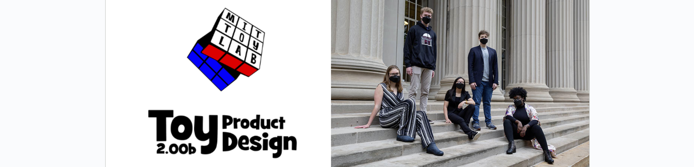
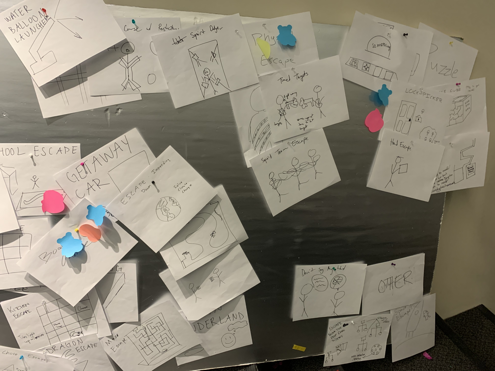
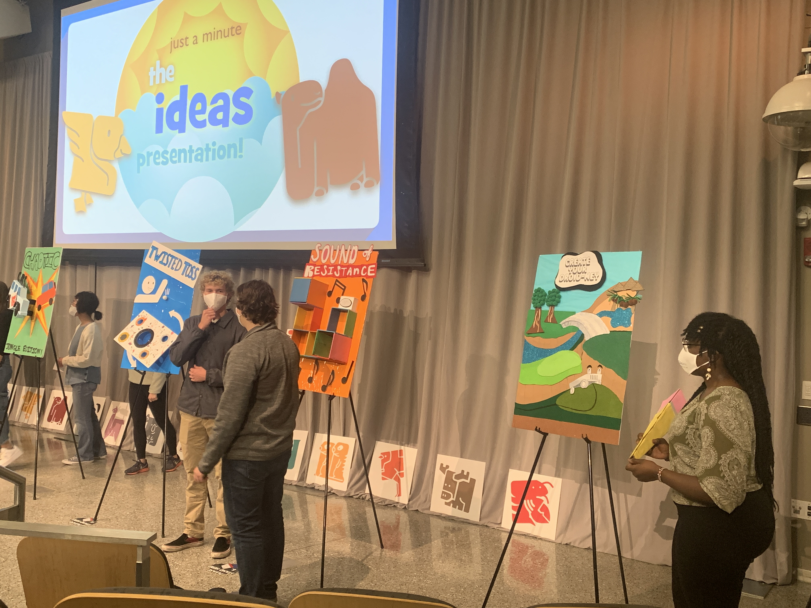
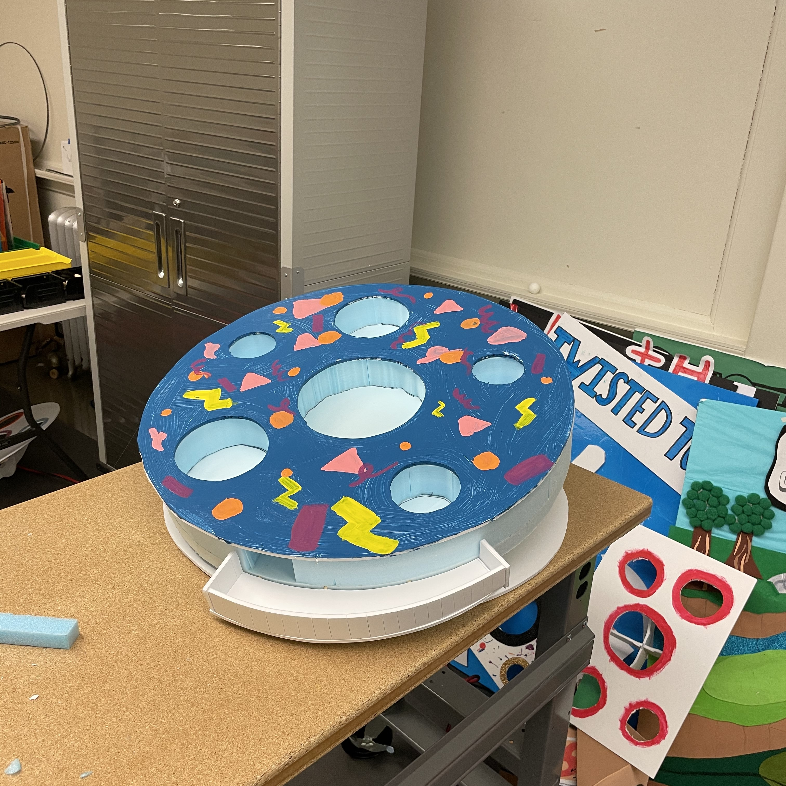

Toy Product Design
This class, offered by MIT’s Mechanical Engineering department, is intended as a first foray into the product design process, with a focus on play and entertainment, as small teams of up to six members work to design and prototype new toys. The course involved several workshops and exercises focusing on brainstorming/ideation, concept validation and downselection, fabrication techniques, electronics, and the prototyping process. It also incorporated playtest visits to a local children’s museum where valuable feedback on toy prototypes from the target demographic as well as their accompanying guardians was obtained. The class involved a significant communication aspect wherein prototype ideas and updates were presented to the class and staff. The project culminated in a broadcasted “Playsentation” where the final prototypes were demonstrated on stage in a play sketch, leaving room for Q & A from the audience as well as class instructors.
Key Skills : brainstorming and concept development, estimation, sketching/sketch modeling, graphic design, workshop tools, computer aided design, written,visual and oral communication, budgeting, product development timeline
brainstorming/ideation
A significant portion of the early class sessions was devoted to the process of ideation and brainstorming. The goal was to break free from overthinking and simply commit to the process of putting forth ideas, without fear of practicality or later stage technicalities. Since the prompt was “fun” and “play”, it was an exercise in letting one’s imagination reign, a state that is often deprioritized in the more technical engineering class settings. After putting down as many ideas as we could, we began the process of tracing loose associations between the ideas. In terms of game/ toy mechanisms, concepts, themes, and gameplay.
After grouping ideas into rough categories, we continued to sift through the options on the basis of interest, further crystallizing the vision of potential toy ideas. We then introduced more concrete down selection mechanisms such as Pugh charts, coming up with parameters or metrics along which to judge the feasibility of our ideas. Each team narrowed their ideas down to three options, and using ongoing instruction in sketching and rapid prototyping using easily workable materials such as cardboard, foam core, felt, paper and fabrics.
We were then tasked in producing quick prototypes of our three ideas. We would then present these to the greater classroom and course staff, and bring along the prototypes to the local children’s museum to receive feedback based on the children’s interaction with the prototypes.
From this feedback, we were able to perform a final downselection to our final idea and focus on prototyping our toy. We decided on our “Twisted Toss” idea; a toy that took inspiration from the corn hole tossing game, but added the challenge of a moving platform with speed controls, music, and animated LEDs.
prototype fabrication
We consolidated the key elements of the gameplay, and entered a secondary brainstorming period. Our most critical module was the mechanism of movement of the platform, and we spent a lot of time thinking up possible options for actuation. As the financial manager of the team, I had to ensure that we stayed within budget, thinking through and fleshing out our concepts and using all the materials already available in house before purchasing extra parts during the prototyping process. We explored linear actuators, and use of springs before settling on a motorized rotary crank and three point pulley system.
The top plate would sit atop dense, spongy foam. Three equispaced anchors would be mounted on the underside of the top plate, to which metal wire would be attached and strung vertically through a secondary wooden plate underneath the foam. This second plate would be mounted on wooden rests, under which a rotary crank and motor would rest on a third wooden base plate. The wires would be strung through pulley wheels mounted on the base plate, and attached to the rotary crank fairly taut so that once the motor was turned on, it would pull on the top plate mounts with varying strength, tilting the top plate, with the high density foam compressing and restoring the position of the plate with the introduction and release of tension in the wires. This final prototype design was ideal for the following reasons:
- It utilized a lot of readily available parts, such as foam already present in the lab for rapid prototyping needs.
- The mechanism was fairly intuitive, with the main operator being the motorized rotor, simplifying the controls process, as the speed could be traced back to one component as opposed to the complicated dynamics of programming individual linear actuators.
- Troubleshooting the mechanism became less of a digital and more of a mechanical problem, which was more visual hence intuitive and easier to solve.
With the operating mechanism sorted, we moved onto other components of the toy, combining various elements of our class instruction to develop a visually appealing finished product which featured:
- A top plate design developed on Fusion 360 and imported into a shop bot for cutting, with multicolored netting to catch the plates, and later painted in attractive colors
- An LED light strip running along the netted holes and the inside of the toy, with programmed animations run through an arduino microcontroller
- Stretchy, luminescent fabric branded with the team’s hedgehog logo to cover the internal mechanisms while allowing access for repairs and flexibility of movement of the top plate.
Time constraints kept us from fully fleshing out the audio component, which we had intended to integrate into the netting to sense scored balls and play specific sounds in kind using vibration sensors and arduino microcontrollers. The calibration and testing of said sensors was too much of a time sink, so we focused on smoothing out the baseline operation and included this feature as an opportunity for future work. Overall the toy was deemed a success and was tested out by classmates and course staff alike.